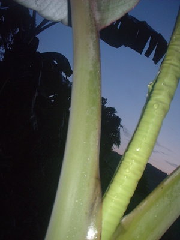

ubbus 
/ʔubbus/
n.
a shoot; a bud; new growth
Ka ubbus iyan ka manguwed pad ne dewun ne diyè egtubù te uud e te sugpang te minsan nekey ne pinamula ne egderewun. Iyan seini ka mewuri ne migtubù wey malebud pad. Bayew kenè pad egpekeiling te buyag e ne dewun ka batek din su egmalurung pad wey mewumel-wumel pad. Senge kakuwa iyan eggimuwen seini ne bawi te kehang, pali, lusung wey duma pad ne me dalu.
Kuwa ke kun te me ubbus te beyabas su iglala ta te palì nu eyew mahaan egkeulian.
Get a few guava buds because we will boil it with your wound to heal it quickly.
Kahiyen te duma ne egkaayun kun ne eggulayen ka ubbus te binggala wey mananam kun ne egkeenen.
Others said that the cassava buds are good to cook and it is delicious.
Eng. shoot; bud; plant top
OCM: Ethnobotany (824)
DDP: Growth of plants (1.5.6), Parts of a plant (1.5.5)
Online dict status: -
Usage level: M
v.
for the plants (eg-uubbus, mig-uubbus/in-uubbus, theme, eg><ø-rdpCV-) to produce new growth at the top
Eng. growth, produce to
Online dict status: -
Usage level: M
Updated by: RJH,TME,QDL,RJH
Last updated: 18/Jun/2014
This page last updated: 03-Jan-2020
Copyright © 2009-2014, Matigsalug Language Christian Association, Inc